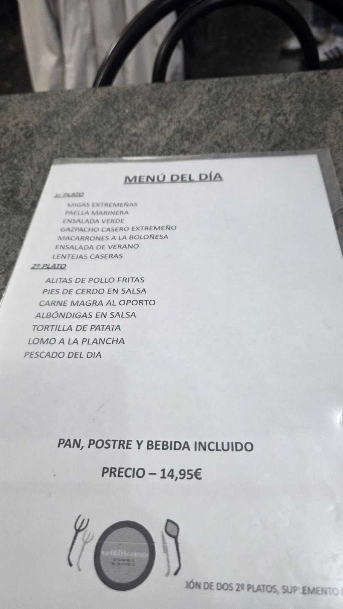

Un bar de barrio con comida casera y muy buen trato. Menú diario, pequeña terraza y esas migas extremeñas por las que la gente hace cola sin quejarse.A neighbourhood bar with homemade food and a warm welcome. A daily menu, a little terrace, and those migas people happily queue for.
Platos grandes, con cantidad y buen precio. De esos sitios a los que vuelves por el trato y por los buenos platos. Abrimos temprano: el mejor esmorzar de Sant Andreu.Generous plates, good value. The kind of place you return to for the welcome and the food. We open early: the best breakfast in Sant Andreu.
